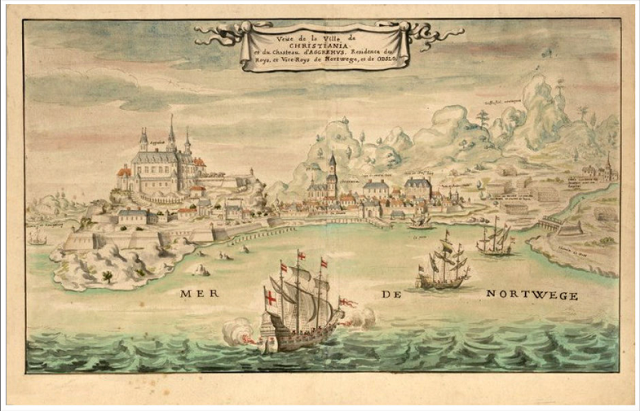

Capitale multiple et centre diplomatique mondial.

Oslo occupe le territoire se situant à la limite septentrionale du fjord portant son nom, elle est traversée par la rivière Akerselva. Dans toutes les autres directions, la ville est entourée de collines verdoyantes. Les environs comptent une quarantaine d’îles, dont la plus importante est Malmøya (« L'Île du fer ») (0,56 km2), ainsi que pas moins de 343 lacs. Ceux-ci constituent une source importante d’eau potable pour tout l’ouest de la ville. Le taux de variation de la population est de 0,76 %. Le point le plus élevé est la colline Kjerkeberget (« La Montagne de l'Église »), à 631 mètres. Alors que la surface couverte par la ville est remarquablement vaste par rapport aux autres métropoles européennes, la population osloïte reste faible : le territoire municipal comprend de nombreux parcs et espaces ouverts qui lui donnent un aspect aéré et vert. Bien que la plupart des forêts et des lacs entourant Oslo soient détenus par des propriétaires privés (sans préjudice au principe de droit ancien du allmennsrett, c'est-à-dire l'accès libre aux terres pour tous, quel que soit leur propriétaire, à condition de respecter faune et flore), il existe un large consensus populaire visant à leur conservation, quitte à aller à l'encontre du développement de la ville. De nombreux quartiers d’Oslo souffrent par conséquent de congestion, de rareté relative et de coûts généralement élevés de location ou d'achat des logements (selon les statistiques de 2006, Oslo est la troisième ville la plus chère au monde, après Tokyo et Osaka), ce qui est compensé par le cadre de vie unique offert aux citadins, avec un accès quasi immédiat à la nature sauvage, notamment au nord à Nordmarka (la Forêt du Nord), une forêt dont les lacs les plus grands sont Bogstadvannet, Sognsvann et Maridalsvannet : aucun espace vert ou forêt n'est distant de plus de dix minutes à pied de sa porte, et Frognerseteren, proche de la station de sports d'hiver de Tryvann est à 30 minutes en métro de Majorstua (près du parc Vigeland) et à 40 minutes du Storting (en plein centre-ville), changement de ligne compris. La presqu'île de Bygdøy (sud-ouest d'Oslo), en grande partie résidentielle, est très appréciée par les habitants de l'agglomération d'Oslo, notamment pour son calme, ses petites rues, l'une des trois principales bases nautiques de la ville et la richesse de ses divers musées. S'y trouve aussi la ferme du roi. Le climat d'Oslo est de type continental humide, tempéré par la proximité de l'océan Atlantique et du Gulf Stream. Les hivers sont froids, avec des températures en dessous de zéro de novembre à mars. Janvier est le mois le plus froid avec une température moyenne de −4,3 °C, et on atteint des températures minimales d'environ −7 °C en janvier et février. Le record de froid à Oslo a été atteint en février 1871 avec une température de −27,9 °C. Les chutes de neige sont réparties équitablement sur les mois d'hiver et on compte en moyenne plus de 25 cm de neige trente jours par an. Les précipitations annuelles sont de 763 mm, avec des hivers plus secs que les étés.
Dans ce site, vous trouvez diverses informations contenant
- Géographie
- Histoire
- Culture
- Galerie
- Contact
- Liens